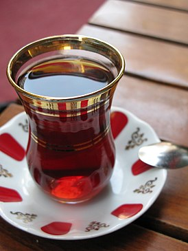

Навигация
Чай
Краткая история чая
Исторические памятники подтверждают, что в Китае чай был известен ещё в 220-280 годы нашей эры (времена троецарствия), начало его возделывания как культуры датируется приблизительно 350 годом нашей эры. Таким образом, история чая на самом деле насчитывает тысячелетия, но долгое время культура распития этого напитка была доступна только Востоку.
Китайские философы древности утверждали, что китайский чай идеальный напиток, ведь он бодрит и веселит как вино, но при этом не вызывает опьянения, и не переносит инфекции, так, как это делает вода. Изначально чай был доступен только вельможам, его заваривали и пили в качестве целебного напитка (для укрепления сил, улучшения зрения), а также использовали в составе лекарственных средств (например, мази от ревматизма). Использовать китайский чай как напиток начали на его родине, причём произошло это только в 5 веке н.э., напиток высоко ценился, его дарили императоры своим подданным в знак благодарности и поощрения. Вплоть до 6 века н.э. чай был напитком знати, но постепенно он становился доступен и другим, более простым, сословиям, и уже к 10 веку н.э. стал поистине общенациональным напитком Китая, а, значит, и предметом торговли.Популяризвция чая
 В XVI – XVIII веках в Европу чай ввезли португальцы и голландцы, традиция послеобеденного чаепития укоренилась в Нидерландах, после чего пересекла Атлантику и распространилась вплоть до Нью-Амстердама.
В XVI – XVIII веках в Европу чай ввезли португальцы и голландцы, традиция послеобеденного чаепития укоренилась в Нидерландах, после чего пересекла Атлантику и распространилась вплоть до Нью-Амстердама.